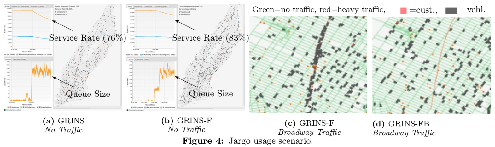

Room 10-204, East Main Building
Dept. of Computer Science and Technology
Tsinghua University, Beijing 100084, China
Email: jamesjpan@outlook.com
I am a fifth-year PhD student in the Database Group at Tsinghua University, advised by Prof. Guoliang Li. Before
coming here I was an Associate Consultant and then a Product Support Manager at
Microstrategy. I received my
B.S. and M.Eng. degrees in Bioengineering from the University of Maryland, College Park in 2010 and
2012, respectively. During my masters I spent time in the Human Performance
Laboratory under Prof. Arthur
Johnson and worked on medical devices for personal healthcare.
Currently I am mainly interested in spatial data management and focusing on
applications for ridesharing fleet control.
News
(May 2021) I have passed my PhD defense!
(September 2020) I have given a talk about data management for climate research to the Chinese Meteorological Assocation.
(June 2020) Our demo of a real-time stochastic simulator for evaluating ridesharing algorithms has been accepted to VLDB 2020.
(January 2020) I have begun consulting with the Chinese Meteorological Association for developing a new cloud-based data distribution and analysis system.
(June 2019) I have received the VLDB Travel Grant for attending VLDB 2019.
(June 2019) We have welcomed our son Michael Pan (潘远2) into this world, born June 6, 2019 at 6:06 PM in Beijing, China.
(May 2019) Our full paper on evaluating search and join-based ridesharing algorithms has been accepted to VLDB 2019.
(April 2019) I have passed my PhD proposal exam!
(June 2018) I have been awarded the Tsinghua University Tuition Scholarship for international PhD students.
(August 2016) I have begun my first year of PhD studies at Tsinghua University in Beijing, China.
(April 2013) Our paper on comparing the airflow perturbation device with impulse oscillometry has been published in Hindawi J. Med. Eng.
(July 2012) I have started my employment at Microstrategy as an Associate Consultant.
(May 2010) Our portable pulse oximeter for Android phones has won the third place Capstone Design Award. [video]
Publications
James J. Pan, Guoliang Li, Yong Wang. Evaluating Ridesharing Algorithms using the Jargo Real-Time Stochastic Simulator. VLDB 2020. [paper, video]
James J. Pan, Guoliang Li, Juntao Hu. Ridesharing: Simulator, Benchmark, and Evaluation. VLDB 2019. [paper, poster]
James J. Pan, Andrew Saltos, Daniel Smith, Arthur T. Johnson, Jafar Vossoughi. Comparison of Respiratory Resistance Measurements Made with an Airflow Perturbation Device with Those from Impulse Oscillometry. Hindawi J. Med. Eng. 2013. [paper]
Arthur T. Johnson, Samantha Jones, James Pan, Jafar Vossoughi. Variation of Respiratory Resistance Suggests Optimization of Airway Caliber. IEEE Trans. Biomed. Eng. 2012.
Arthur T. Johnson, Jafar Vossoughi, James Pan. Calibration of an Airflow Perturbation Device (APD). AMSE J. Med. Devices 2012.
Projects
Design and Evaluation of Ridesharing Fleet Control Algorithms

Jargo can evaluate ridesharing algorithms under
traffic and in real-time. See it in action here.
Ridesharing fills the gap between on-demand and fixed-line transportation
services and has already had a large impact on the personal transportation
industry. From the computational perspective, ridesharing poses two
interesting challenges: Given the state of vehicles and customers at a
particular time, (1) how to optimally match the vehicles and customers? then
(2) how to route the vehicles to service their assigned customers? Both of
these challenges are complicated by the sheer volume of matching and routing
possibilities in addition to the dynamic nature of the system.
Unfortunately while the past decade has produced various approaches to
address these challenges, researchers have only limited understanding of how
well these approaches work in the real world, due to lack of a suitable
experimental platform. The first part of this project aims to characterize
algorithms in terms of real-world performance. When we tested some
algorithms under real-time conditions, we found that algorithms behave much
differently compared to a static setting [VLDB'19]. To
introduce traffic into the environment, we designed a new simulator
Jargo that is able to simulate traffic by manipulating the timestamps
of the vehicles in a way controlled by the experimenter, and we demonstrated
how a traffic-aware algorithm could yield greater service revenue compared to
one that was unaware [VLDB'20]. In the
second part, we now plan to use what we've learned to design new ridesharing
algorithms.
Validating the Airflow Perturbation Device for Measuring Respiratory Resistance
Respiratory resistance is an important measurement for diagnosing certain
diseases including asthma, bronchitis, and pneumonia. However, no instrument
exists that is easy to use, inexpensive, and widely available. The Airflow
Perturbation Device (APD) works by variably rotating a screen near the mouth
to interrupt normal breathing airflow, then measuring the resulting mouth
pressure to compute the airway resistance. As it only requires a few parts to
assemble, the APD is lightweight, portable, and inexpensive. But in order to
convince practitioners and gain clinical acceptance, it must be validated
against established techniques, such as impulse oscillometry (IOS).
Performing validation in live patients is expensive and time-consuming.
Instead, I fabricated a mechanical lung system that could simulate various
physical conditions, then used this system to APD measurements with those
from impulse oscillometry. The results showed that the calibrated APD
measurements were in strong agreement with IOS [J. Med. Eng. 2013, J. Med. Devices 2012],
validating its use as a diagnostic tool. Based on these results, the
mechanical system was then used to confirm that real-world measurement
variations were due to human respiratory characteristics and not from the APD
itself [Trans. Biomed.
Eng. 2012].
PocketDoc: Portable Pulse Oximetry for Everyone and Everywhere
During a medical emergency, blood oxygenation and pulse are usually the first
vital signs that emergency responders measure in order to determine the
health status of a patient. For critical emergencies, early response can be
the difference between life and death, thus anything that can speed up the
medical response is valuable. In this project, our goal was to develop a
portable monitoring system that could be easily deployed, with capability to
transmit to hospitals and ambulances in real time. To overcome the fidelity
problem of using Bluetooth, we designed a workflow that used the Android USB
port as a serial port to capture data from an OEM pulse oximeter, then used
the phone's networking capabilities for transmission over the Internet
[video]. This proof-of-concept
won the third place Capstone Design Award at our department.
Awards
VLDB Endowment SPEND Committee Travel Grant (2019)
Tsinghua University Tuition Scholarship (2018, 2019)
Third Place, 2010 Capstone Design Awards from the University of Maryland Fischell Department of Bioengineering
Presidential Scholarship from the University of Maryland (2006-2010)